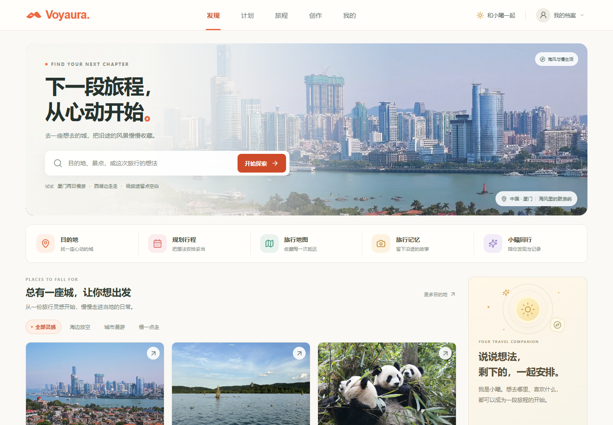
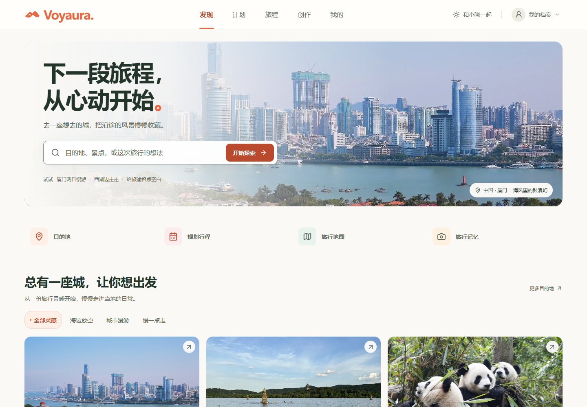

改稿前 · 第四轮基线

查看原尺寸 ↗保留方案 A 的暖白、橙红与摄影，让标题、内容和操作各有位置。本页展示真实代码改稿后的运行截图。

查看原尺寸 ↗
查看原尺寸 ↗这里对照的是首屏。私人身份、任务标题与城市文字已遮盖；未向当前个人档案添加演示记录。上方按钮只切换截图，实际操作请打开真实产品。
以下图片来自独立测试数据库中的真实 HTTP 与 Chrome 操作。文字和地点均明确标为软件验收输入，不能当作真实旅行或在线查询结果。
200% 检查将根文字从 16px 放大到 32px；摄影上的文字另经截图查看。对比度自动检查限于报告列出的实色背景样本，不等同完整 WCAG 认证。
在线高德、模型和影像生成仍需真实凭证及联调；缺少服务时保留条件草案、信息不足与未连接提示。保存、隐私授权及删除确认仍由用户主动操作。
本轮由 Codex 修改与验证；不构成 CodeArts 使用证据。历史轮次截图与报告保留。